Imagem: Asmodee UK (partida em andamento)Cooperativo · Família
Como jogar Pandemic
Para quem nunca jogou2 a 4 jogadores45 min8+Edição Galápagos
· Redação Elite Boardgamers
Resumo em 1 minuto
Viaje pelo mapa, trate doenças e junte 5 Cartas de Cidade da mesma cor para descobrir as 4 curas antes que surtos, falta de cubos ou o fim do baralho derrotem a equipe.
Todos vencem ou perdem juntos: a equipe vence ao descobrir as 4 curas, e cada jogador tem uma função com habilidade própria.
O turno tem três partes: até 4 ações, comprar 2 Cartas de Jogador (resolvendo as Epidemias) e infectar cidades.
Cidade com 3 cubos de uma cor não recebe o quarto: há um surto, e a equipe perde no 8º surto, se faltar cubo ou se o Baralho de Jogador acabar.
Como você aprende: 4 etapas, da mesa montada à contagem de pontosLeitura do essencial: cerca de 9 min
À vista, só o essencial para jogar. O que abre com + é explicação, exemplo, exercício ou regra de caso especial: abra quando precisar.
Montar a mesa passo a passo
A montagem segue a seção "Preparação" do manual, que ocupa as p. 2 e 3, na mesma ordem dos seis passos numerados. Os componentes estão na p. 1.
Componentes da caixap. 1
Componente
Quantidade
Para que serve
Tabuleiro
1
O mapa do mundo, com as cidades ligadas por linhas e as trilhas
Cartas de Função
7
A função de cada jogador, com a habilidade especial
Peões
7
Um de cada cor, igual à da Carta de Função
Cartas de Jogador
59
48 Cartas de Cidade, 6 Cartas de Epidemia e 5 Cartas de Evento
Cartas de Referência
4
O resumo das ações, uma para cada jogador
Cartas de Infecção
48
Uma por cidade; dizem onde a doença se espalha
Cubos de doença
96
24 de cada uma das 4 cores
Centros de Pesquisa
6
Onde se descobre a cura e por onde se voa entre centros
Marcadores de Cura
4
Um por doença; um lado é o "frasco vazio", o outro é o lado de doença Erradicada, com o símbolo de proibido (erradicação: etapa 2)
Marcador de Velocidade de Infecção
1
Marca quantas cidades são infectadas por turno
Marcador de Surtos
1
Conta os surtos
Os passosp. 2 e 3
1. Tabuleiro e peças. Ponha o tabuleiro ao alcance de todos. Ao lado dele, deixe os 6 Centros de Pesquisa e os cubos de doença, separados por cor em 4 montes. Tire 1 Centro de Pesquisa do estoque e ponha em Atlanta, a sede do CDC p. 2.
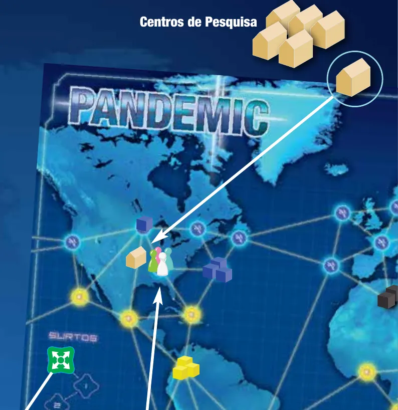
Passo 1: os Centros de Pesquisa ao lado do tabuleiro e um em Atlanta, junto dos peões. Ilustração: manual Galápagos p. 2
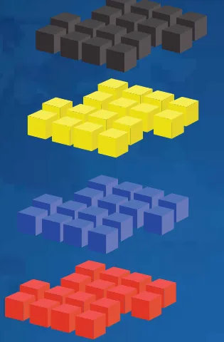
Passo 1: os cubos separados por cor em quatro montes. Ilustração: manual Galápagos p. 2
2. Marcador de Surtos e Marcadores de Cura. Ponha o Marcador de Surtos no espaço "0" da Trilha de Surtos. Ponha os 4 Marcadores de Cura com o lado do "frasco vazio" para cima, perto do Indicador de Curas Descobertas p. 2.
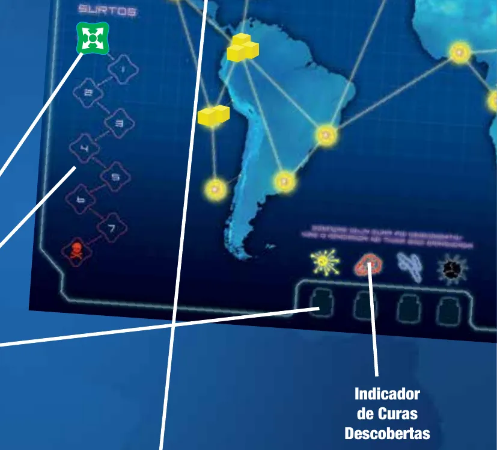
Passo 2: a Trilha de Surtos, que vai de 0 a 7; o espaço seguinte, da caveira, é a derrota; e o Indicador de Curas Descobertas. Ilustração: manual Galápagos p. 2
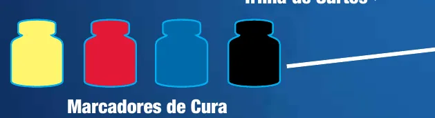
Passo 2: os quatro Marcadores de Cura, com o frasco vazio para cima. Ilustração: manual Galápagos p. 2
3. Velocidade de infecção e as 9 primeiras cidades. Ponha o Marcador de Velocidade de Infecção no espaço "2" mais à esquerda da Trilha de Velocidade de Infecção. Embaralhe as 48 Cartas de Infecção e revele 3: ponha 3 cubos em cada uma dessas cidades. Revele mais 3: 2 cubos em cada. Revele mais 3: 1 cubo em cada. Os cubos têm a cor da cidade na carta; ao todo são 18. As 9 cartas vão viradas para cima para a Pilha de Descarte de Infecção, e as outras 39 formam o Baralho de Infecção p. 3.
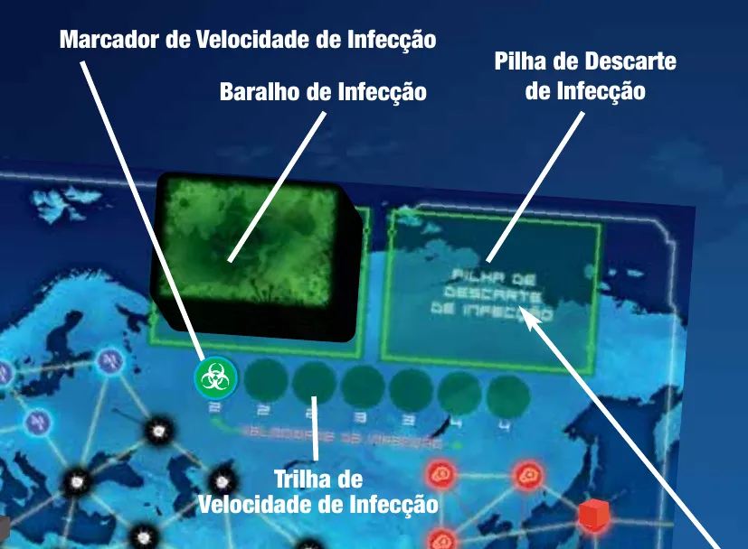
Passo 3: o Baralho de Infecção, o espaço da Pilha de Descarte de Infecção e a Trilha de Velocidade de Infecção, com o marcador no primeiro espaço. Ilustração: manual Galápagos p. 3
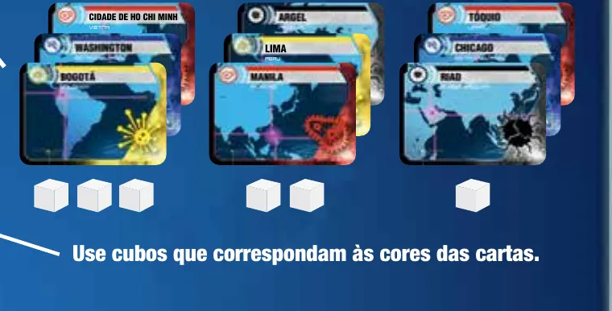
Passo 3: as nove Cartas de Infecção em três grupos, que recebem 3, 2 e 1 cubos da cor da carta. Ilustração: manual Galápagos p. 3
4. Cartas e peão de cada jogador. Dê uma Carta de Referência a cada jogador. Embaralhe as Cartas de Função e dê 1 a cada um, virada para cima. Cada jogador pega o peão da cor da sua Carta de Função e o põe em Atlanta. Depois, separe as 6 Cartas de Epidemia das Cartas de Jogador e deixe-as de lado até o passo 5. Embaralhe as outras Cartas de Jogador (Cidade e Evento) e dê a mão inicial de cada um, conforme a tabela abaixo p. 2.
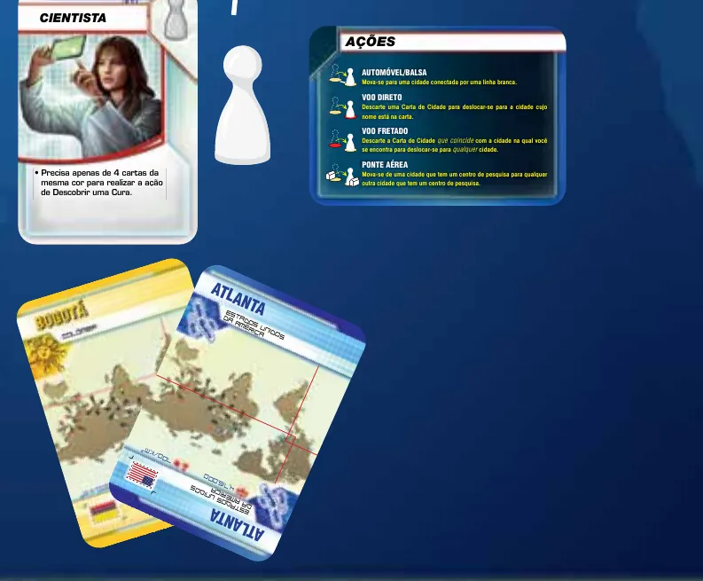
Passo 4: Carta de Função (a Cientista), o peão dela, a Carta de Referência e duas Cartas de Cidade. Ilustração: manual Galápagos p. 2
5. Baralho de Jogador. Escolha a dificuldade: 4 Cartas de Epidemia para uma partida Introdutória, 5 para a Normal, 6 para a Heroica. As que sobrarem voltam para a caixa. Divida as cartas que não foram para a mão em tantas pilhas viradas para baixo quantas forem as Epidemias em jogo, de tamanhos o mais parecidos possível. Embaralhe 1 Carta de Epidemia em cada pilha e empilhe as pilhas umas sobre as outras, com as menores embaixo. Esse é o Baralho de Jogador, que fica no tabuleiro ao lado do espaço da Pilha de Descarte de Jogador p. 3.
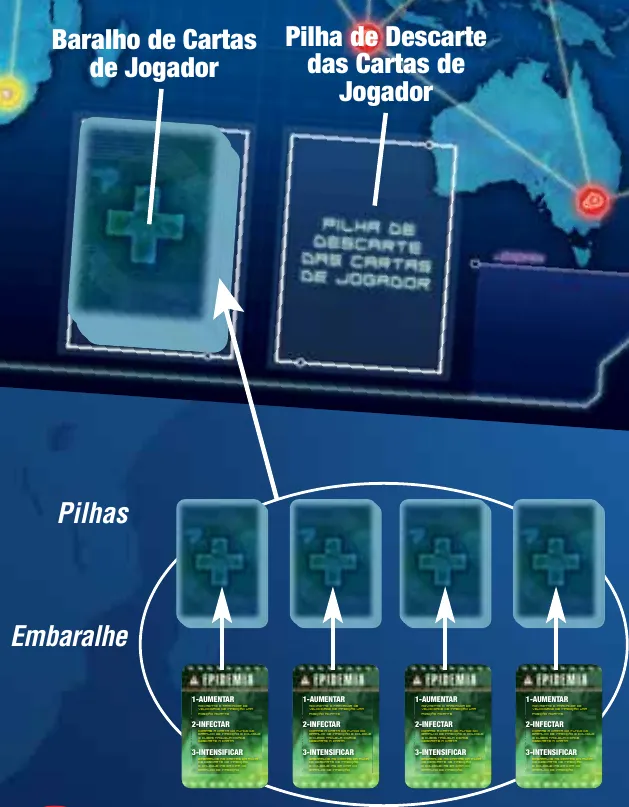
Passo 5: quatro pilhas, cada uma com uma Epidemia embaralhada, juntas formam o Baralho de Cartas de Jogador. Ilustração: manual Galápagos p. 3
6. Quem começa. Cada um olha as Cartas de Cidade da própria mão. Começa quem tiver a cidade de maior população, que vem impressa na carta p. 3. O manual não diz o que fazer se alguém não tiver Carta de Cidade na mão: combine com a mesa. Depois, a vez segue para a esquerda.
Uma partida em andamento, não a mesa recém-montada, numa caixa com cartas em francês: cubos separados por cor, Baralho de Jogador e Baralho de Infecção no tabuleiro e, diante de cada jogador, a Carta de Função e a mão aberta. Imagem: Asmodee UK
O que muda com o número de jogadoresp. 2
Jogadores
Cartas na mão inicial
Cartas que sobram para as pilhas
2
4 para cada um
45
3
3 para cada um
44
4
2 para cada um
45
A última coluna é conta nossa (53 cartas menos as da mão). Com 2 jogadores e 4 Epidemias, as pilhas ficam com 13, 12, 12 e 12 cartas, já com a Epidemia; a de 13 vai por cima.
O que volta para a caixa. As Cartas de Função que não foram dadas e os peões delas p. 2 e as Cartas de Epidemia que não entraram no Baralho de Jogador p. 3.
Antes de começar, confira: 1 Centro de Pesquisa em Atlanta e 5 ao lado; todos os peões em Atlanta; Marcador de Surtos no 0; 4 Marcadores de Cura com o frasco vazio para cima; Marcador de Velocidade de Infecção no primeiro "2"; 9 cidades com cubos (3, 3, 3, 2, 2, 2, 1, 1, 1) e as 9 cartas na Pilha de Descarte de Infecção; cada jogador com Carta de Função aberta, Carta de Referência e a mão certa; o Baralho de Jogador com uma Epidemia em cada pilha.
Partida de 3 jogadores. Quantas cartas cada um recebe na mão inicial?
Com 2 jogadores são 4 cartas, com 3 são 3, com 4 são 2 p. 2.
Comece a jogar em 4 minutos
Meta: em 4 minutos de leitura, montar a mesa e jogar o seu primeiro turno sem abrir o manual.
A ideia do jogo
Pandemic é cooperativo: todos ganham ou perdem juntos. A equipe vence ao descobrir a cura das 4 doenças. Perde se houver 8 surtos, se faltar cubo de uma cor quando for preciso pôr no tabuleiro ou se faltarem Cartas de Jogador para comprar p. 1. Cada jogador tem uma função com uma habilidade só dele p. 1.
Monte a mesa
Resumo da seção "Montar a mesa passo a passo", acima.
Tabuleiro; 1 Centro de Pesquisa em Atlanta, o resto e os cubos ao lado.
Marcador de Surtos no 0; Marcadores de Cura com o frasco vazio para cima (só se mexem quando há cura).
Velocidade de infecção no primeiro "2"; infecte 9 cidades com 3, 2 e 1 cubos.
Função, Carta de Referência, peão em Atlanta e mão inicial (4, 3 ou 2 cartas).
Baralho de Jogador com 4 Epidemias na primeira partida, uma em cada pilha.
Começa quem tem a cidade de maior população.
Seu primeiro turno
O turno tem três partes p. 3:
Faça até 4 ações, em qualquer combinação; pode repetir a mesma. As de movimento: Automóvel/Balsa (ir pela linha branca até uma cidade ligada à sua), Voo Direto (descartar uma Carta de Cidade e ir até a cidade dela), Voo Fretado (descartar a carta da cidade onde você está e ir para qualquer cidade) e Ponte Aérea (de um Centro de Pesquisa para outro). Também pode Tratar uma Doença: tirar 1 cubo da sua cidade p. 4.
Compre 2 Cartas de Jogador. Se vier uma Epidemia, resolva-a na hora (resumo abaixo) e não compre outra no lugar p. 6.
Infecte cidades. Revele, do topo do Baralho de Infecção, tantas cartas quanto a velocidade de infecção (2 no começo). Cada cidade revelada recebe 1 cubo da cor dela. Se já tiver 3 dessa cor, não recebe o 4º: há um surto. Descarte cada carta na Pilha de Descarte de Infecção p. 6.
Epidemia, em três linhasp. 6. Avance o Marcador de Velocidade de Infecção 1 espaço. Pegue a carta do fundo do Baralho de Infecção, ponha 3 cubos nessa cidade e descarte a carta na Pilha de Descarte de Infecção. Embaralhe só a Pilha de Descarte de Infecção e ponha por cima do Baralho de Infecção.
Surto, em duas linhasp. 7. Avance o Marcador de Surtos 1 espaço e ponha 1 cubo da cor do surto em cada cidade ligada. Uma delas que já tenha 3 cubos dessa cor tem um surto em cadeia.
Se a sua Carta de Função muda uma ação, vale o que ela diz p. 4. Carta de Evento na mão se joga a qualquer momento, sem gastar ação, e o efeito está escrito nela p. 7. Na partida Introdutória, as cartas da mão ficam viradas para cima p. 7.
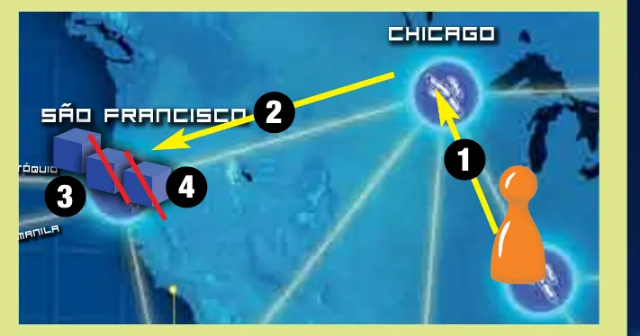
O turno de João: de Atlanta a Chicago (1), de Chicago a São Francisco (2) e dois tratamentos em São Francisco (3 e 4), cada um tirando um cubo azul. Ilustração: manual Galápagos p. 5
Ainda não precisa saber
As outras ações (Construir um Centro de Pesquisa, Compartilhar Conhecimento, Descobrir uma Cura) e as funções em detalhe: etapa 2. Limite da mão e as regras das Cartas de Evento: etapa 3. Doença erradicada: etapa 2. Surto em cadeia em detalhe: etapa 4.
Como a partida acaba
A equipe vence assim que a quarta cura é descoberta. Perde na hora com o 8º surto, se faltar cubo de uma cor para pôr no tabuleiro ou se alguém não puder comprar 2 Cartas de Jogador p. 7.
Prefere ver? Este vídeo explica as regras do jogo base. Ele complementa este guia; em caso de diferença, vale o manual.
Pandemic - Como Jogar, canal Romir Play House · abrir no YouTube
0Antes de tudo: o que é este jogoOpcional
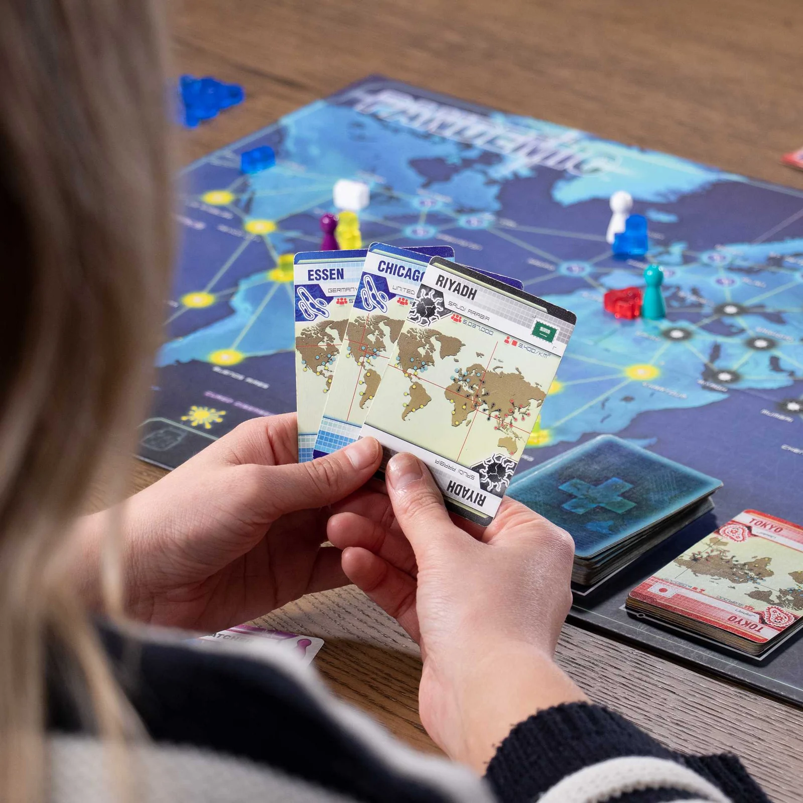
Imagem: Asmodee UKAbrir esta seção
Pandemic é um jogo cooperativo para 2 a 4 jogadores, a partir de 8 anos, com partidas de cerca de 45 minutos (página oficial da Z-Man Games). Os jogadores formam uma equipe de combate a doenças que viaja pelo mundo tratando infecções e juntando cartas para descobrir a cura de quatro doenças: Azul, Amarela, Preta e Vermelha p. 1.
A partida é uma corrida contra três relógios: o Baralho de Jogador, a Trilha de Surtos e o estoque de cubos. As Epidemias, escondidas no Baralho de Jogador, aceleram as infecções, e com elas os surtos e o gasto de cubos. Todos podem e devem dar opinião, mas quem decide é o jogador da vez p. 3.
1Como este guia ensinaOpcional
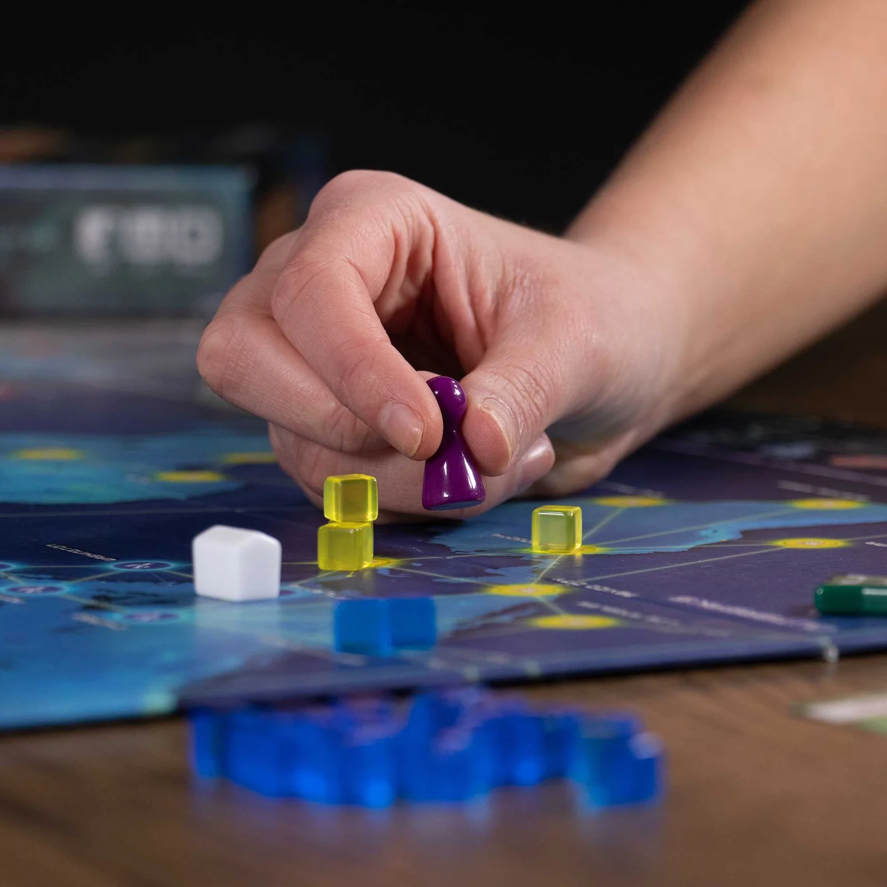
Imagem: Asmodee UKAbrir esta seção
São quatro etapas, na ordem em que as regras aparecem na mesa: mover-se pelo mapa; as outras ações e as funções; comprar cartas, Epidemias e Cartas de Evento; infecções, surtos e o fim da partida. Cada etapa tem Para entender (o porquê), Passo a passo (a regra que se usa sempre), regras adicionais à parte e tarefas com ajuda que diminui: exemplo resolvido, tarefa para completar e sua vez. Escolha uma opção em cada pergunta para ver a certa e a explicação. No fim, uma avaliação diz o que reler, e a folha de consulta fica para a mesa.
2Etapa 1: mover-se pelo mapa
Por que funciona assim
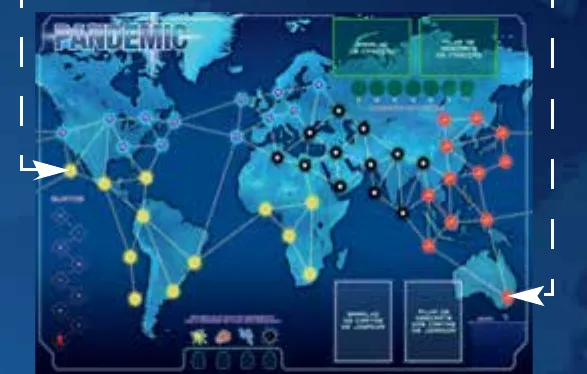
O tabuleiro inteiro: a linha branca que sai pela borda dá a volta e reaparece do outro lado. As setas marcam Los Angeles, à esquerda, e Sydney, à direita, que estão ligadas. Ilustração: manual Galápagos p. 4Regra adicional: A linha que sai do tabuleiroVer um exemplo resolvidoPratique esta etapa: exercícios com respostas
3Etapa 2: as outras ações e as funções
Por que funciona assimRegra adicional: Os 6 Centros de Pesquisa já construídosRegra adicional: Cubos de várias cores na mesma cidadeRegra adicional: Doença erradicadaRegra adicional: Mais de 7 cartas depois de receber uma
As funçõesp. 8. Cada Carta de Função traz a habilidade; o manual explica as sete:
Função
O que muda
Cientista
Descobre a cura com 4 Cartas de Cidade da mesma cor, não 5
Médico
Tratar uma Doença tira todos os cubos da cor. Com a doença curada, tira todos os cubos dela só por entrar ou estar na cidade, sem gastar ação, e impede que cubos dessa doença sejam postos na cidade dele
Pesquisadora
Em Compartilhar Conhecimento, pode dar qualquer Carta de Cidade da mão dela a quem estiver na mesma cidade, no turno de qualquer um dos dois
Especialista em Operações
Como ação, constrói Centro de Pesquisa sem carta; uma vez por turno, como ação, vai de um Centro de Pesquisa para qualquer cidade descartando qualquer Carta de Cidade
Especialista em Quarentena
Impede surtos e cubos novos na cidade dela e em todas as ligadas a ela (não vale na preparação)
Agente de Viagens
Como ação, move o peão de outro jogador como se fosse o seu, ou leva qualquer peão a uma cidade onde haja outro peão; sempre com o consentimento do dono
Especialista em Planos de Contingência
Como ação, pega uma Carta de Evento da Pilha de Descarte de Jogador e guarda sobre a Carta de Função (uma por vez, fora do limite da mão)
Regra adicional: Agente de Viagens, detalhesRegra adicional: Especialista em Planos de Contingência, detalhesRegra adicional: Médico movido por outroVer um exemplo resolvido
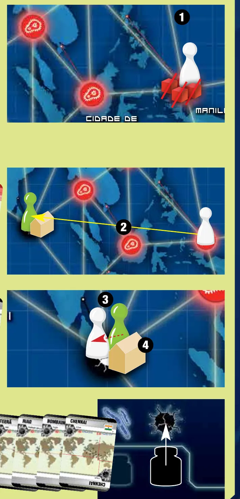
O turno de Ana: tratar em Manila (1), Voo Fretado até Chennai (2), pegar a carta de Chennai (3) e curar a doença preta com quatro cartas (4). Ilustração: manual Galápagos p. 5Pratique esta etapa: exercícios com respostas
4Etapa 3: comprar cartas, Epidemias e Cartas de Evento
Por que funciona assim
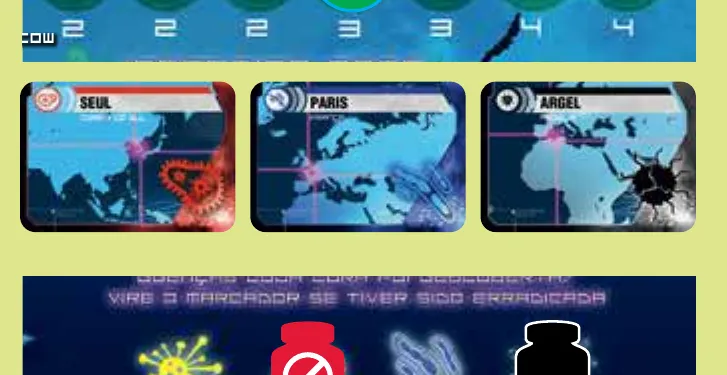
O exemplo de infecção do manual: a Trilha de Velocidade de Infecção (2, 2, 2, 3, 3, 4, 4), com o marcador no quarto espaço, o das 3 cartas, e as três Cartas de Infecção reveladas: Seul, Paris e Argel; embaixo, o Indicador de Curas Descobertas com o vermelho erradicado e o preto curado. Ilustração: manual Galápagos p. 6Regra adicional: A cidade do fundo já tem cubosRegra adicional: Baralho de Jogador sem 2 cartasRegra adicional: Duas Epidemias de uma vezRegra adicional: O texto de cada EventoRegra adicional: Evento entre duas EpidemiasRegra adicional: Mão aberta ou fechadaVer um exemplo resolvidoPratique esta etapa: exercícios com respostas
5Etapa 4: infectar cidades, surtos e o fim da partida
Por que funciona assim
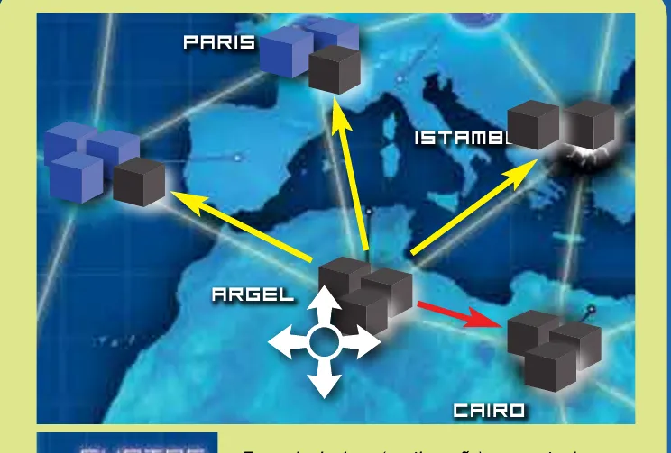
O surto em Argel: um cubo preto vai para Madri, Paris e Istambul; Cairo, que já tinha 3 cubos pretos, não recebe o quarto (seta vermelha) e tem um surto em cadeia. Ilustração: manual Galápagos p. 7
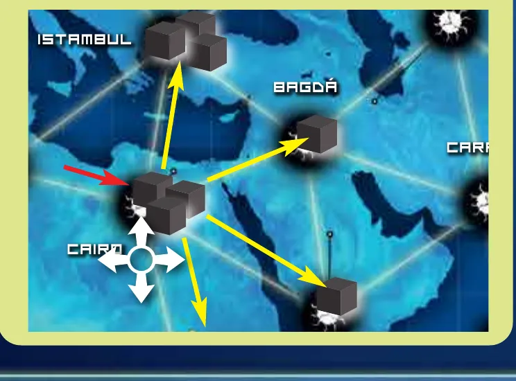
O surto em cadeia no Cairo: um cubo preto vai para Istambul, Bagdá, Riad e Cartum; Argel, que já teve surto nesta carta, não recebe. Ilustração: manual Galápagos p. 7Regra adicional: Cubos de várias coresRegra adicional: Doença curada, mas não erradicadaVer um exemplo resolvido
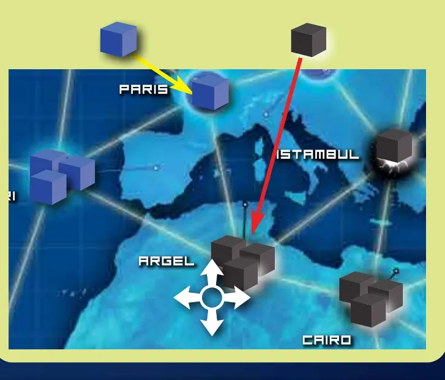
Antes do surto: Paris recebe o segundo cubo azul, e Argel, que já tem 3 cubos pretos, vai ter um surto. Ilustração: manual Galápagos p. 6Pratique esta etapa: exercícios com respostas
6Situações especiaisOpcional
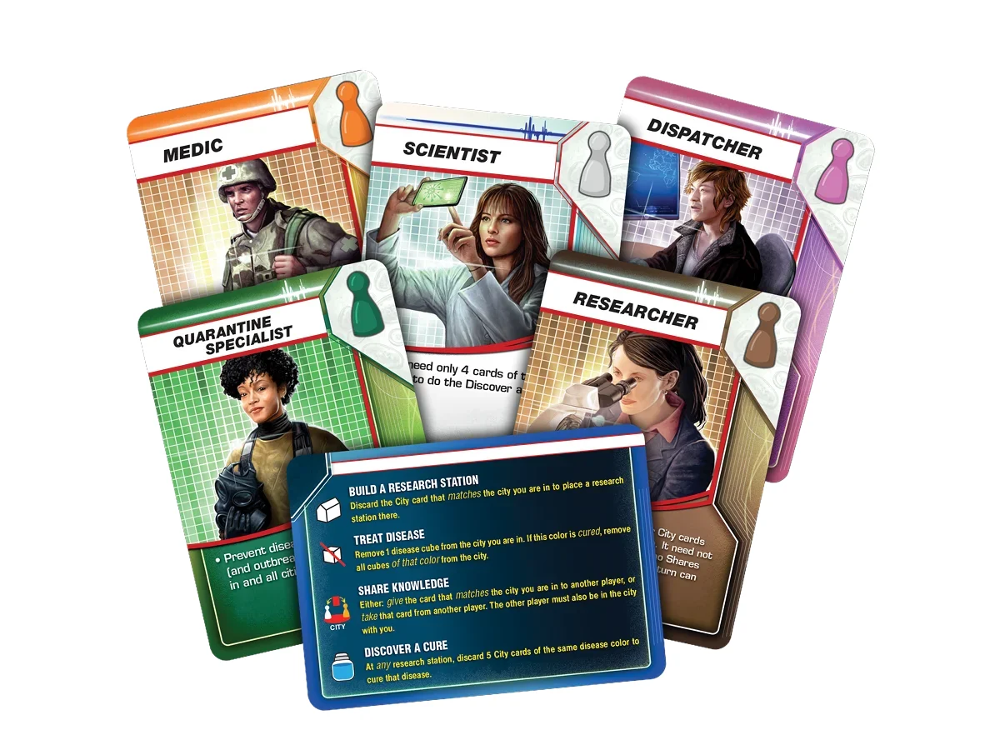
Imagem: Z-Man GamesAbrir esta seçãoSobre a edição: Especialista em Quarentena e Médico na EpidemiaRegra adicional: Evento depois de um surto, não duranteSobre a edição: Jogo solo
7Avaliação finalOpcional
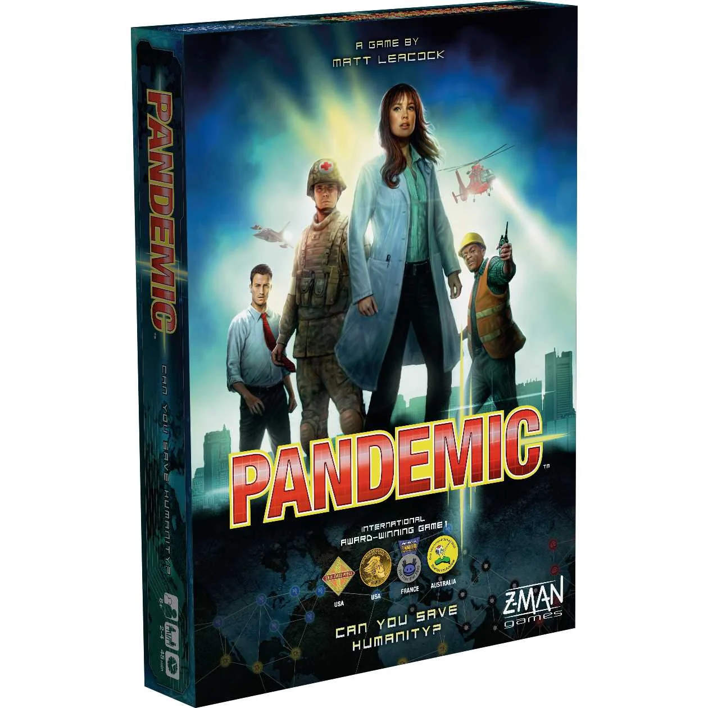
Imagem: Asmodee UKAbrir esta seção
Responda sem consultar. Cada resposta diz o que reler.
1. Você está em Atlanta e descarta a carta de Atlanta. O que pode fazer com essa ação?
A carta da cidade onde você está paga um Voo Fretado p. 4. Releia a etapa 1.
2. A doença amarela já tem cura. Você está numa cidade com 3 cubos amarelos e não é o Médico. Quantas ações gasta para tirar os 3?
Com cura, Tratar uma Doença tira todos os cubos dessa cor p. 4. Releia a etapa 2.
3. Na Epidemia, o que é reembaralhado e posto em cima do Baralho de Infecção?
Intensificar mexe só no descarte de infecção p. 6. Releia a etapa 3.
4. Pode-se jogar uma Carta de Evento no turno de outro jogador?
Qualquer jogador joga Evento durante um turno, e não é uma ação p. 7. Releia a etapa 3.
5. Uma cidade com 3 cubos pretos é infectada de novo pela doença preta. O que acontece?
Nunca se põe o 4º cubo da mesma cor: no lugar, há um surto p. 6. Releia a etapa 4.
6. Quando a equipe vence?
Basta descobrir as 4 curas; não é preciso erradicar p. 7. Releia a etapa 4.
8Para consultar durante a partida
Imagem: Asmodee UK
Preparação: Centro de Pesquisa em Atlanta; Surtos no 0; Curas com o frasco vazio; Velocidade de Infecção no primeiro "2"; 9 cidades com 3, 3, 3, 2, 2, 2, 1, 1, 1 cubos; função, Carta de Referência e peão em Atlanta; mão de 4 (2 jogadores), 3 (3) ou 2 (4); Baralho de Jogador com 4, 5 ou 6 Epidemias, uma por pilha, pilhas menores embaixo. Começa a maior população; depois, à esquerda.
O turno
Até 4 ações.
Compre 2 Cartas de Jogador. Epidemia: resolva na hora, sem substituta. Limite da mão: 7.
Infecte tantas cidades quanto a velocidade de infecção, uma carta de cada vez.
Ação
Custo
Efeito
Automóvel/Balsa
nada
Para uma cidade ligada pela linha branca
Voo Direto
carta da cidade de destino
Para a cidade da carta
Voo Fretado
carta da cidade onde você está
Para qualquer cidade
Ponte Aérea
nada
De um Centro de Pesquisa para outro
Construir um Centro de Pesquisa
carta da cidade onde você está
Centro de Pesquisa nela
Tratar uma Doença
nada
Tira 1 cubo; com cura, todos da cor
Compartilhar Conhecimento
a carta da cidade onde os dois estão
Dar ou pegar essa carta
Descobrir uma Cura
5 cartas da mesma cor
Cura, em qualquer Centro de Pesquisa
Epidemia: Aumentar (velocidade +1 espaço) · Infectar (carta do fundo, 3 cubos) · Intensificar (só o descarte de infecção, embaralhado, por cima).
Infecção: 1 cubo; com 3 da cor, surto. Surto: marcador +1; 1 cubo em cada cidade ligada; cidade com 3 tem surto em cadeia; quem já teve surto nesta carta não recebe.
Velocidade de infecção: 2, 2, 2, 3, 3, 4, 4.
Evento: qualquer jogador, a qualquer momento, sem gastar ação, menos entre comprar uma carta e resolvê-la.
Vitória: 4 curas. Derrota: 8º surto; falta de cubo; falta de 2 Cartas de Jogador para comprar.
Regras conferidas no livro de regras da edição brasileira de Pandemic (Galápagos, código PAN001, arquivo "regras v2.0", tradução de Leonardo Zilio), baixado da biblioteca de downloads da Asmodee Brasil. É o jogo base de Matt Leacock, da Z-Man Games, na versão de 2013; não é o Pandemic Legacy nem as caixas derivadas. As páginas citadas são as numeradas no manual, de 1 (capa) a 8 (funções e créditos). A variante solo vem num folheto à parte e não está neste guia.